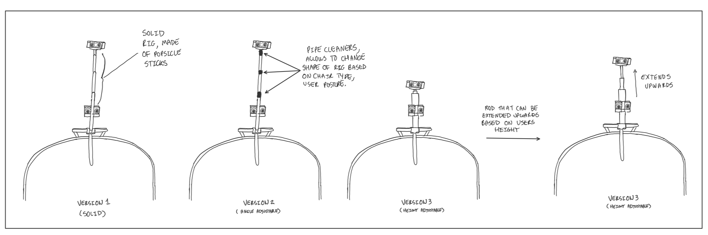

Demo Video
Storyboard Video
Project Details
As technology around us advances the world we live in is evolving. Work, education, entertainment, and essentially everything we interact with is now shifting online. These shifts are leading to human beings living in a much more sedentary lifestyle weakening their core and leading to bad posture. This bad posture can lead to many problems such as back pain and spinal dysfunction. Which is why the project we chose to take on is Posture Alert. This is a device that you can attach to your chair which you spend the most amount of time on. Once attached, the sensors on the device will identify if you are slouching. If you are slouching or have bad posture the device will make noise to alert you to straighten your posture.
How and why we came up with it
We initially started by coming up with 10 ideas amongst ourselves and drawing our own implementations of it. Among them one of the ideas brought up was Posture Alert. This was because we were all slouching while drawing our other ideas when we noticed all of our postures were bad. While realizing this is a problem most people face on a daily basis we had drawn sketches of it as part of our initial sketches. When choosing which idea to move forward with from all of our initial ideas, we chose to go ahead with Posture Alert as we felt this is something we related to the most which can actually make an impact for us on a daily basis.
Detailed Sketches
{kind=link}
To start off our detailed sketches, we wanted to create a sketch that most clearly describes what Posture Alert does. This sketch is the product of that discussion and provides a simplistic visual explanation of what the product we are designing should do. This image speaks a thousand words and could be shown to potential investors across the world, regardless of language barriers!

Before we could properly design a device that could recognize bad posture we have to first decide what dictates bad posture. After extensive research we came to the conclusion that good posture requires a persons spine to be as straight as possible. In contrast we experimented with various common seating positions that did not facilitate a persons spine to be straight and this image below shows these different bad sitting positions.
{kind=link}
To create our device, we decided that the best hardware at our disposal would be a use of multiple ultrasonic sensors. Ultrasonic sensors work by emitting sound waves at a frequency too high for humans to hear. They then wait for the sound to be reflected back, calculating distance based on the time required. After experimenting with various positions and amount of ultrasonic sensors needed to accomplish our goal we landed on a design that best represented version 3. In terms of version 1, out of the various issues with it the major one was that the bottom ultrasonic sensor is positioned in a spot that would be uncomfortable and would end up resulting in bad posture as the device would be pressing into the back of the person sitting. In terms of version 2, and version 4 the same problem with the bottom ultrasonic sensor being in an uncomfortable spot is why we ultimately did not go with these designs, as-well as that, we found out that we could achieve accurate results with 2 ultrasonic sensors and the 3rd sensor would be unnecessary given its improvements to accuracy. In other words, the cost increases of adding a third sensor did not justify the increase in accuracy.
{kind=link}
After deciding on the general rig design we first created a solid structure to hold our ultrasonic sensors in position as shown in version 1 of the image below. This version was made of popsicle sticks. Although this version is cheap to create and sturdy, it suffered from the issue of not being adjustable. In a good design we should be able to accommodate persons of different height, because of the person is too short or too tall the ultrasonic sensors will not register bad posture correctly. Another design we created was version 4 which used an adjustable rod that could be extended based on a persons height. Although version 4 does somewhat solve this issue we realized that we could create a cheaper solution that incorporated both popsicle sticks and pipe cleaners that could be bent to change the angle of the ultrasonic sensors. Version 3 below shows this final version we decided upon which was a-lot cheaper and lighter to create whilst still solving the issue of needing it adjustable.

When deciding upon which type of notifier to use we had to consider that there would be different types of users using this product in different settings. The first type of notifier would be a speaker. This would be the loudest of the 3 different options, the pros of this option is that it would be loud therefore the user would easily know when their posture is bad, however a con of this implementation is that because its loud it might not be appropriate in a public setting, for example in a quiet office setting or a library. The second option is to use a buzzer, this would be less obnoxious which would mean that it would be more appropriate in a public setting, however the con of this type of notifier is that the user might not here it if they are wearing headphones or if they are in a loud public setting with a-lot of noise interference. The last type of notifier we thought of is a simple light. The pro of this implementation is that it is subtle while hard to miss if placed in a good spot (like under the persons monitor) however the con of this implementation is that it required excessive wiring and this is very costly, time-consuming and is visually alot uglier than the other notifiers. We ultimately chose to use a speaker as it seemed to be the middle ground device. Considering this, we would definitely market this device to individuals using it in a private setting like a single office room or a home office. If we would like to branch into different avenues of consumers than we would have to reconsider our choice.
{kind=link}
In early discussion of how we could improve on our initial bad posture idea, we started considering other forms of bad health practices people partake in while sitting. One that stood out is when people sit for too long. Its advised by various medical sources that you should take a break from sitting every 30 minutes and therefore we needed to come up with a method to deal with this. With our given resources we thought that using a force/pressure sensor available in our Arduino kit would do the trick, however after numerous testing we came to the conclusion that to get a accurate reading on whether or not someone was sitting in a chair based on a pressure sensor located on the base of the chair that unless we exerted a-lot of pressure (upmost of pressing a finger hard into the force/pressure sensor!) that it would not register. Therefore these sensors would not be appropriate for our implementation. Despite this, this idea would be carried into our final implementation in terms of a timer implemented with the use of our ultrasonic sensor. Thus, this idea was not a dead end and these sketches serve as important steps in getting to our final design!

After we implemented all our relevant sensors and created a functional product we ended up with a product with wiring and breadboard/Arduino placement similar to that depicted in the left image below. This was quite confusing and messy so we needed to find a way to manage all the wires, and what better way to do this then to sketch out a potential design for the finished product! A potential final product with wire management can be shown in the right image below.
{kind=link}
In this image we can see the function of both ultrasonic sensors. The top ultrasonic sensor is responsible for checking if the users posture is correct or bad. The bottom ultrasonic sensor detects if the user is sitting there or not. This bottom sensor could be replaced with a capacity sensor, button that initiates a countdown timer or pressure sensor (as described in one of the earlier sketches above). The original idea was to have the bottom ultrasonic sensor to the side of the user, clipping to the side of the seat, but we changed the design to have both sensors on a single rig. As mentioned already we tried other sensors and they either weren’t responsive enough like the pressure sensor or were inconvenient to use like the button countdown timer.

This image depicts our button position ideas. By pressing the calibration button it makes both the ultrasonic sensors take another reading if the user wants to change their seating position. Given the purpose of the button, one could argue that it is something that might be pressed once in a while if the chair is privately owned by one user. Therefore in our final design we opted to attach the button to the box attached to the back of the chair as shown in the leftmost image below. We also considered other options such as if the chair was in a public space where different users of various heights would be using the device, therefore in this case we would want to locate the button in a more accessible area such as on the side of the chair arm as shown in the middle and right image below. We also considered that some people are left and right hand dominant thus we created two versions for left or right handed individuals.

In terms of placement of the Arduino and necessary attachments (button, breadboard, speaker and wiring), we narrowed down where we could place it to 3 possible places. On the back of the chair, on the bottom of the chair and completely separate from the chair such as on a desk as shown in the image below. The problem with the bottom of the chair is that because it is farther from the ultrasonic sensors and rig that we would require more wiring to get it to work, although this design would be a-lot prettier as the device would be hidden, it would be more costly. In addition since its on the bottom of the chair, we would then have to move the calibration button from the bottom as it would be inconvenient and move the speaker because it would hard to hear if the sound if coming from underneath the chair itself. In a similar vain, having the device on a desk would require even more wire management which would be a-lot less aesthetically appealing and be a-lot more costly. We opted for the final option of having the device on the back of the chair as it would require less wiring, would have a more accessible calibration button and the speaker would be able to channel the noise into the open space, making it easier for the user to hear when they are being notified of bad posture.
Concept Sketches
In order to decide how we can make a device that people can use on a daily basis, which can enhance their lifestyle we each had initially come up with 10 designs each.
{kind=link}
{kind=link}
{kind=link}
{kind=link}
{kind=link}
{kind=link}
{kind=link}
{kind=link}
{kind=link}
My Contribution
We discussed our ideas and made sketches which we sent to the group. We discussed/tried different sensors for our idea, then I built the device and helped program its functionality. I also recorded the videos.